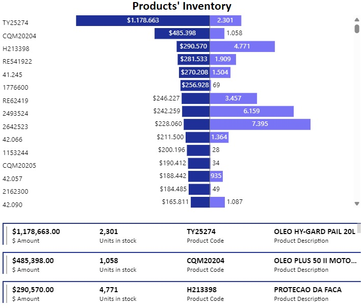
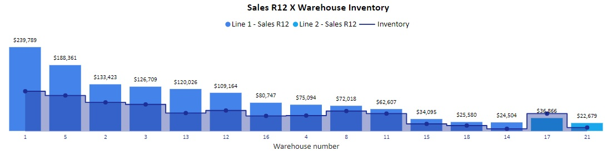

Analysis Examples
The examples on these page is only a part of complex projects of business analysis. The basis of these project consisted in understand the Key Performance Indicators and use a diverse of data aquisiton method (API, SQL or Excel), data preparation, data analytics and data vizualization.
Project 1: Mapping product inventory in retails' stores
- Created a tool that identifies quantity and monetary value to help Key Stakeholders to take the decision about go to market actions and about the assets turn strategy.
- Scraped over 100.000 lines from different sources.
- Cleaned data and used data manipulations techniques (DAX) to create new features.
- Built the data visualization using Power BI.
Vizualization samples

